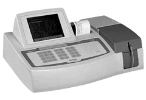

Equipo Erba
Equipo para química clínica nuevo
semiautomatizado marca ERBA modelo CHEM 7

CARACTERÍSTICAS:
- Sistema abierto para cualquier marca de reactivos 10 modos analíticos para el proceso de las pruebas.
- Lineal de un punto, lineal de dos puntos, un punto no lineal, dos puntos no lineal, rango a lineal, rango a no lineal, de un punto con muestra de blanco lineal, de un punto con muestra de blanco no lineal, absorbancia, coagulación (turbidimetría).
- Capacidad de almacenamiento de hasta 200 técnicas canales abiertos; cuenta con 8 filtros instalados 340, 405, 450, 505, 546, 578, 600 y 670 nm. Rango fotométrico de 0 a 2.5 od. Lámpara de cuarzo halógeno de 12v / 20w.
- Acepta tres tipos de cubetas: cuadradas, redondas y reducidas o por sistema peristáltico de absorción programable hasta 200 ul.
- Capacidad para almacenar hasta mil resultados.
- Dos niveles de control de calidad.
- Capacidad para graficar.
- Termostato con temperatura programable.
- 56 teclas de acceso directo.
- Bajo consumo de reactivo.
- Impresora térmica instalada.
- No es pantalla táctil, lo que reduce fallas.
- Sistema peristáltico de alto rendimiento y bajo mantenimiento.
- Capacidad de conectarse a una impresora externa y a un teclado no incluidos.
DATOS COMPLEMENTARIOS: Para mayores informes comunicarse a:
ACCUTRACK, S.A. DE C.V.
Teléfonos: (55) 5524-4481, 5524-2644, 5524-4575
e-mail: ventas@accutrack.com.mx
www.accutrack.com.mx